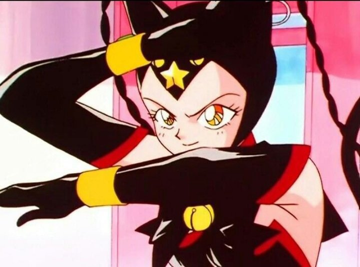

<- Повернутися на головну сторінку
<- Красуня воїн Сейлор Мун
<- Сейлор воїтельки
<- Вороги
Олов'яна Кішка

Головна інформація
Історія:
Олов'яна Кішка мала бути напарницею Свинцевої Ворони, але не завоювала її довіри. Під час шантажу від її колеги деякий час придивлялася, щоб Усагі віддала сама своє Зоряне Зерня. коли це сталося, напала на Ворону, розивши колбу з чорною дірою, куди впала вона ж, і спробувала відібрати "душу" у головної героїні. Цьому завадила Чібі-Чібі. Наступного разу Олов'яна Кішка під час битви втратила один з браслетів Галаксії. Моментально, отримавши роздвоєння особистості отримала наполовину білий костюм та ледь втримувала владу над собою, намагала знову атакувати Сейлор Мун, поки не прийшла роззлючена Галаксія, і не вбила її
Галерея